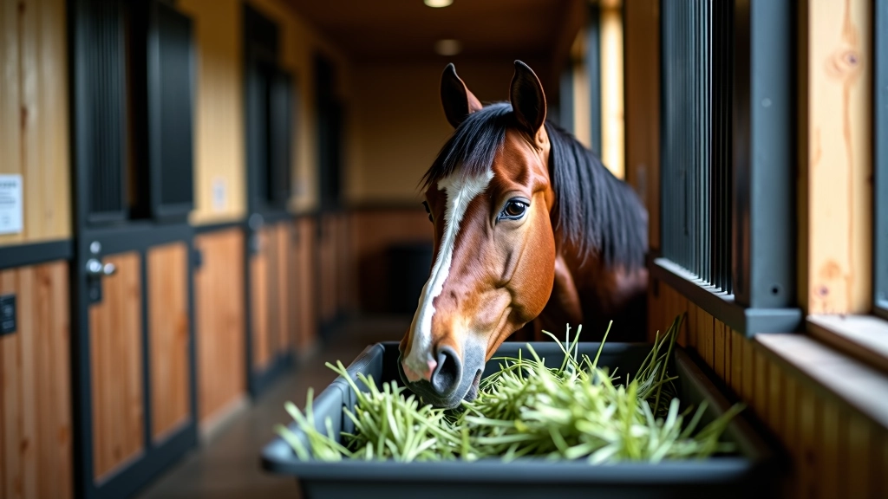
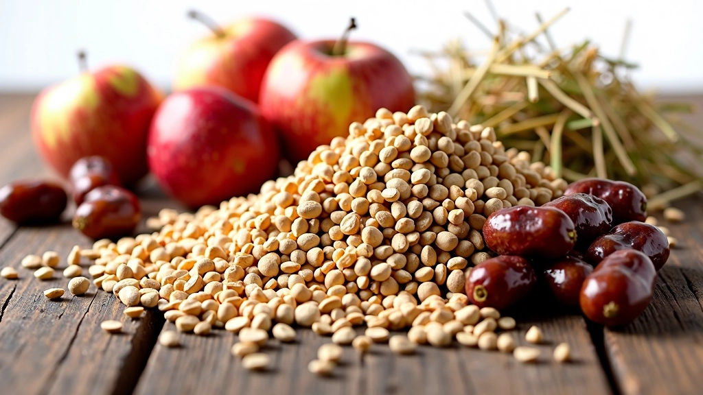
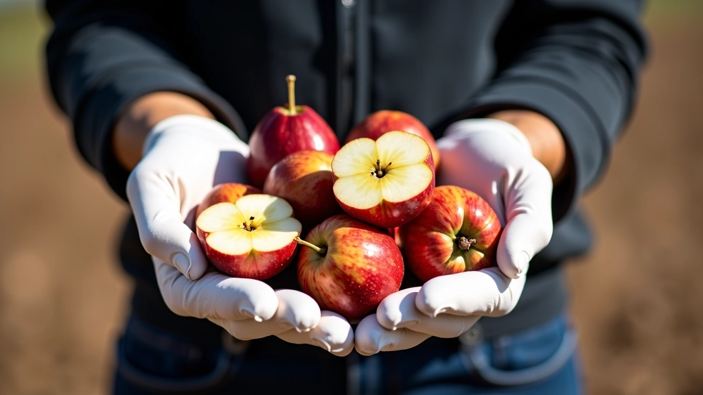
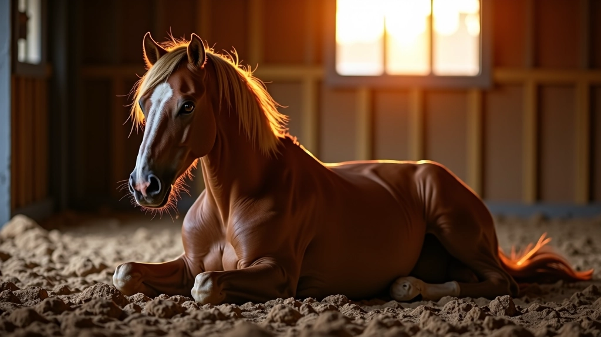

برنامج التدريب التدريجي لبناء التحمل
كيفية بناء قدرة التحمل بشكل آمن وفعّال على مدة عدة أسابيع. يبدأ من الأساسيات وينتقل تدريجياً للمسافات الطويلة.
ما يحتاجه الحصان من سوائل وغذاء لأداء أفضل. جداول تغذية مجربة من محترفين في مجال سباقات التحمل والمسارات الطويلة.

الحصان في السباق يبذل جهداً كبيراً، وجسده يفقد الماء والأملاح والطاقة بسرعة. إذا لم يحصل على التغذية الصحيحة قبل وأثناء السباق، سيشعر بالتعب والضعف ويمكن أن يتعرض لمشاكل صحية. الحقيقة هي أنّ معظم مشاكل الأداء في السباقات الطويلة تأتي من سوء الترطيب والتغذية، وليس من نقص التدريب.
نحن نتحدث هنا عن جداول عملية وسهلة التطبيق. لا تحتاج لأشياء معقدة أو غالية الثمن. ما تحتاجه هو فهم واضح لما يحتاجه جسم الحصان، ومتى يحتاجه بالضبط.

الماء ليس كل شيء. يجب أن تفهم كيف وماذا وكم تعطي حصانك قبل وأثناء السباق.
اعطِ الحصان كمية كبيرة من الماء النقي — حوالي 15-20 لتراً. لا تخف من الإفراط. الحصان سيشرب حسب احتياجاته. مع الماء، أضف ملح صغير (ملعقة صغيرة في دلو) لتشجيع الشرب والحفاظ على التوازن الأملاحي.
قلل كمية الماء في الساعة الأخيرة. الحصان يجب أن يكون معدته خفيفة للركض. اعطِه رشفات صغيرة فقط — لا تزيد عن 5 لترات. هذا يحافظ على التوازن بدون إرهاق الجهاز الهضمي.
في محطات الراحة (كل 10-15 كيلومتر)، اعطِ الحصان رشفات متكررة من الماء البارد. لا تعطِه كمية كبيرة دفعة واحدة. 3-5 لترات كل مرة كافية. الماء البارد يساعد في خفض درجة حرارة الجسم وتحسين الانتعاش.
تنبيه مهم: اختر أنشطة تتناسب مع مستوى لياقة حصانك، تحقق من الأحوال المحلية قبل السفر، وتحدث مع طبيب بيطري إذا كان لديك أي مخاوف صحية قبل بدء برنامج تدريب جديد.
التغذية قبل السباق تختلف عن التغذية اليومية. تحتاج إلى طاقة سريعة وسهلة الهضم. الحبوب الثقيلة والتبن الجاف ليسا خيارات جيدة قبل السباق مباشرة.
اعطِ الحصان وجبة متوازنة من التبن الأخضر (2-3 كيلوغرام) والشعير المطهو أو الذرة (1-1.5 كيلوغرام). هذه الكميات توفر الطاقة دون إثقال المعدة. تأكد من أن الحبوب مطهية أو مسلوقة قليلاً — هذا يسهل الهضم.
وجبة صغيرة جداً فقط. تمر أو تفاح مقطع أو شوفان — هذا يعطي طاقة فورية. تجنب أي شيء ثقيل. المعدة يجب أن تكون خفيفة والحصان جاهز للحركة.
اعطِ الحصان كميات صغيرة من التمر أو الزبيب — 200-300 غرام. هذه تعطي سكريات سريعة الامتصاص. لا تعطِه حبوباً كاملة أثناء السباق. المعدة مشغولة بالركض والهضم صعب.


في السباق الحقيقي، لا وقت لتعقيدات. تحتاج إلى نظام بسيط وفعّال. جهز كل شيء مقدماً. في محطات الراحة، لا تضيع الوقت في البحث عن الماء أو الطعام.
الخبرة تأتي من التجربة المتكررة. في السباقات القصيرة أولاً، ثم الطويلة. كل مرة تتعلم ما يناسب حصانك أكثر. نعم، هناك اختلافات فردية كبيرة. بعض الخيول تشرب أكثر، وبعضها يفضل الأطعمة المختلفة.
انتهى السباق لكن الشغل لم ينته. الساعات الأولى بعد السباق حاسمة للتعافي. الحصان فقد الكثير من السوائل والأملاح والطاقة. إعادة ملء هذه المخزونات بسرعة تحدد مدى سرعة تعافي الحصان.
لا تعطِ كمية كبيرة من الماء دفعة واحدة. اعطِ رشفات صغيرة منتظمة — 2-3 لترات كل 15 دقيقة. يمكنك إضافة قليل من ملح الطعام (ملعقة صغيرة لكل دلو). الحصان يحتاج لاستعادة التوازن الأملاحي ببطء.
ابدأ بإعطاء تبن أخضر طازج والماء بكمية أكبر. لا تعطِ حبوباً ثقيلة بعد. المعدة لا تزال حساسة. التبن الأخضر والماء والملح هو كل ما يحتاجه الآن.
الآن يمكنك العودة للتغذية الطبيعية. وجبة عادية من التبن والحبوب. الحصان يجب أن يأكل وينام جيداً. النوم الجيد والراحة هي جزء من التعافي.

التغذية والترطيب ليست علماً معقداً. هي مسألة بساطة وتكرار. ماء نظيف قبل السباق، وجبة خفيفة بطاقة سريعة، ماء بارد أثناء السباق، ثم تعافي منتظم بعده. هذا كل شيء.
الخطأ الأكبر الذي يرتكبه معظم الفرسان هو عدم التخطيط. يصلون لمحطة الراحة ولا يجدون ماء أو طعام. أو يعطون الحصان كمية خاطئة فيشعر بعدم الراحة. التخطيط المسبق يجنبك هذه المشاكل.
ابدأ بما وصفناه هنا، ثم عدّل حسب احتياجات حصانك. كل حصان مختلف. بعضها يحتاج ماء أكثر، وبعضها يفضل طعاماً معيناً. مع الوقت والتجربة، ستصبح خبيراً في قراءة احتياجات حصانك. والنتيجة؟ أداء أفضل، تعافي أسرع، وحصان سعيد وصحي.
اطّلع على باقي الأدلة
فريق التحرير والمراجعة
كتبه فريق عين الخيل التحريري، متخصص في تقديم إرشادات عملية وسهلة المتابعة لمربي الخيل والفرسان.
اطّلع على المزيد من أدلة تكييف الخيل للسباقات الطويلة
كيفية بناء قدرة التحمل بشكل آمن وفعّال على مدة عدة أسابيع. يبدأ من الأساسيات وينتقل تدريجياً للمسافات الطويلة.

تمارين وطرق علمية لتقوية أرجل وجسم الحصان دون التسبب في إصابات. أساسيات التقوية من البداية.

تقنيات التعافي السريع والفعّال بعد السباق الشاق. رعاية ما بعد المجهود الشديد تحسّن الأداء المستقبلي.